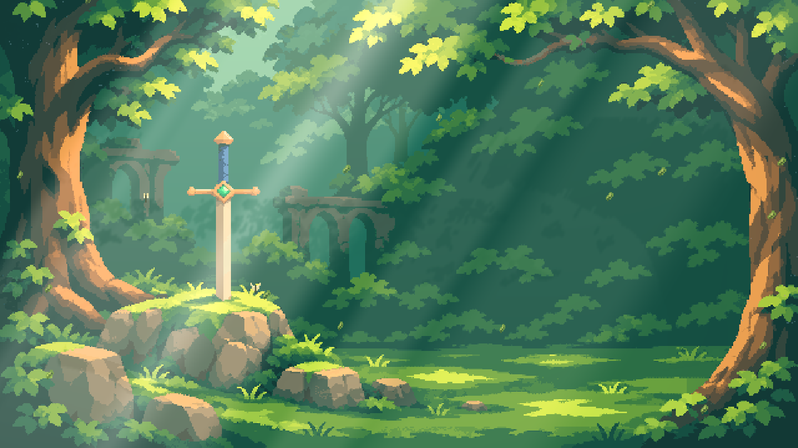
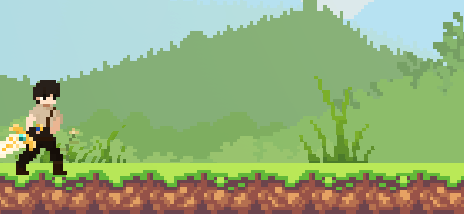

THE GAME
성검을 휘두를 힘은
단 몇 번뿐.
숲의 여덟 스테이지에는 저마다 다른 지형과 적이 기다립니다. 주어진 베기 횟수 안에 모든 적을 쓰러뜨려야 합니다.

PLAYER GUIDE
플레이 가이드
오른손은 방향키에, 왼손은 Z와 X에.
- 좌우 이동
- ←→
- 점프
- Z
- 베기
- X
- 위로 베기
- ↑ + X
- 아래로 베기
- ↓ + X
- 다시 시작
- R
- 힌트 보기 안내 표시 시
- H
- 일시정지
- Esc
게임 언어 변경 Language settings
- 설정에서 언어를 바꿀 수 있어요.
- Change the language in Settings.
- 「設定」で言語を変更できます。
- 可在“设置”中更改语言。
- 可在「設定」中變更語言。
- Cambia el idioma en Opciones.
UPTRAND
만든 사람들
기획
김주안 기획 · 팀장
김희경 스테이지 설계
김여준 스테이지 설계
아트
조하늘 캐릭터 애니메이션
이정우 원화 · 도트 아트
프로그래밍
조예린 시스템 · 프로그래밍